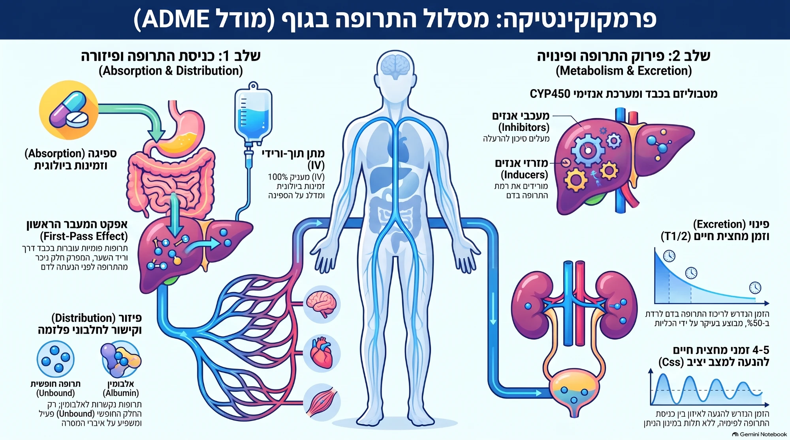

פרמקולוגיה · סיכום נושא
פרמקוקינטיקה
פרמקוקינטיקה היא מה שהגוף עושה לתרופה — מסלול של ארבעה שלבים, ADME: ספיגה, פיזור, פירוק והפרשה.
← גורם ← תוצאה (קוראים מימין לשמאל)
נשאל בשחזורים נקודה שחזרה במבחנים

1 · יסודות מהירים
זכרו את סדר המסע של התרופה: ADME — ספיגה ← פיזור ← פירוק ← הפרשה.
- פרמקוקינטיקה
- השפעת הגוף על התרופה — מה שקורה לתרופה לאורך זמן.
- פרמקודינמיקה
- השפעת התרופה על הגוף — המנגנון והאפקט. מושג משלים, לא חופף.
עקומת ריכוז–זמן
מתן PO (דרך הפה)
←
יש שלב ספיגה (עלייה) לפני השיא
מתן IV bolus (לווריד)
←
הריכוז מגיע לשיא מיידית, ללא שלב ספיגה
2 · ספיגה וזמינות ביולוגית
הכלל המרכזי: רק החלק שנספג ועובר את המעבר הראשון מגיע לדם הסיסטמי.
- מעבר פסיבי: רוב התרופות. חומרים הידרופוביים/ללא מטען, לפי מפל ריכוזים, לא נתון לתחרות.
- מעבר אקטיבי: דרך נשאים, לא תמיד תלוי ריכוז, נתון לתחרות בין מולקולות.
- זמינות ביולוגית (Bioavailability): אחוז התרופה המגיע לדם הסיסטמי. ב‑IV זה 100%, ב‑PO פחות.
אפקט המעבר הראשון (First-pass)
פירוק במעי ובכבד עוד לפני הגעה לדם הסיסטמי, שמוריד זמינות. תרופות פומיות עוברות בכבד דרך וריד השער לפני הנעתן לדם.נשאל
מתן תת‑לשוני או רקטלי
←
עוקף אפקט מעבר ראשון (חלקית) → ספיגה מהירה לדם נשאל
גורם ותוצאה (pH)
סביבה חומצית
←
חומצות אינן טעונות ← נספגות היטב
סביבה בסיסית
←
בסיסים אינם טעונים ← נספגים היטב
3 · פיזור ונפח פיזור (Vd)
מה שקשור לחלבון — לא פעיל ולא מתפזר; רק החלק החופשי עובד.
קשירה גבוהה לאלבומין
←
מאריכה את t½
- נפח פיזור (Vd)
- הנפח התיאורטי של נוזלי הגוף הדרוש כדי להסביר את הריכוז הנמדד בפלסמה. משמש לחישוב מנת העמסה. Vd = Dose / C₀
היכן התרופה "גרה"
פלסמה (4 ליטר)
←
משקל מולקולרי גבוה (למשל הפרין)
נוזל חוץ‑תאי (14 ליטר)
←
הידרופילי, משקל נמוך (אמינוגליקוזידים)
כלל מי הגוף (42 ליטר)
←
ליפופילי, משקל נמוך (אלכוהול)
4 · מטבוליזם: CYP450 וקינטיקה
המטרה: להפוך תרופה ליפופילית לתוצר פולארי (הידרופילי) שאפשר להפריש דרך השתן. מתבצע בעיקר בכבד.
אינטראקציות עם אנזימי CYP450שכיח מאוד במבחן
מעכב CYP
למשל: Ketoconazole, Erythromycin, מיץ אשכוליות
←
למשל: Ketoconazole, Erythromycin, מיץ אשכוליות
t½ של הסובסטרט מתארך; ריכוז התרופה בדם עולה ↑
משפעל CYP
למשל: Phenobarbital, Rifampin, עישון
←
למשל: Phenobarbital, Rifampin, עישון
t½ של הסובסטרט מתקצר; ריכוז התרופה בדם יורד ↓
סדרי קינטיקה
- סדר אפס (לא‑לינארי)
- כמות קבועה מפונה ליחידת זמן. סכנת הצטברות! לדוגמה: Aspirin, Ethanol, Phenytoin.
- סדר ראשון (לינארי)
- אחוז קבוע מפונה ליחידת זמן. יש מחצית חיים קבועה (t½).
5 · הפרשה, פינוי ומינון
תרופה הידרופילית
←
פינוי בעיקר בכליה, יוצאת דרך השתן
תרופה הידרופובית
←
פינוי בעיקר בכבד אל המרה, יוצאת בצואה
מינון ושיווי משקל (Css)
- זמן להגעה לשיווי משקל: כ‑4 עד 5 מחציות חיים (t½). הזמן לא תלוי בגודל המנה.
- מנת העמסה (Loading Dose): תלויה בנפח הפיזור (Vd). נועדה להגיע מהר לריכוז מטרה.
- מנת אחזקה (Maintenance Dose): תלויה בפינוי (Clearance). נועדה לשמור על רמה קבועה.
- ניטור ריכוז בדם: נדרש עבור תרופות עם מרווח טיפולי צר, כגון אמינוגליקוזידים או ונקומיצין.נשאל
6 · נקודות שחזרו בשחזורים — לא לפספס
- מתן תת‑לשוני (למשל ניטרטים בתעוקת לב) עוקף את אפקט המעבר הראשון בכבד.
- מיץ אשכוליות מעכב CYP (בעיקר CYP3A4) → ריכוז התרופה עולה, סכנת רעילות.
- Levothyroxine (אלטרוקסין): לוקחים על קיבה ריקה, בבוקר לפני ארוחת הבוקר.
- אמינוגליקוזידים: מרווח טיפולי צר, הרג תלוי‑ריכוז → מנה גדולה פעם ביום + ניטור רמות בדם.
- משפעל CYP → ריכוז↓; מעכב CYP → ריכוז↑.
- שיווי משקל אחרי 4–5 מחציות חיים, בלי קשר לגודל המנה.
סיכום לימודי המבוסס על חומרי הקורס בנושא פרמקוקינטיקה. נועד לחזרה — אין בו אבחון או ייעוץ רפואי.